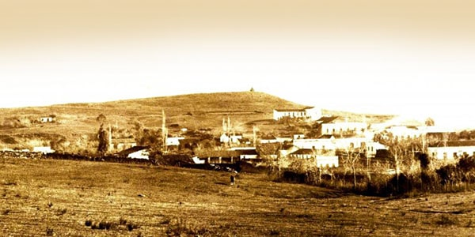
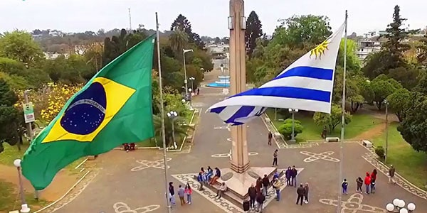

RIVERA CITY LAST NEWS
MAGIC NIGHT CONFIRMED
On Thursday, December 19, within the framework of the activities of "Rivera shines in December", starting at 8 pm, the nineteenth edition of the "Magic Night" will be held on Av. Sarandi, between Bvar. 33 Orientales and Rodo street. On this traditional night, as every year in December, Rivera's shops and free shops will have discounts of up to 50% and will remain open until 3 am, it will be a great "white road", with a parade and shows with bands. Christmas student youths and scenarios with a diversity of artistic and cultural presentations along our main avenue. In addition, there will be a stage in Plaza Artigas with the performance of renowned artists, and another in front of the Uruguay Club, where the Municipal Folkloric Ballet will perform.
VACCINATION IN CHILDREN
Uruguay estimates to vaccinate children between 5 and 11 years old against covid-19 between January and February 2022, said the Minister of Public Health on Monday, who defended that the measure carries "beneficial elements." He affirms that there is a set of beneficial elements, and stressed that the dose is only one third of the adult inoculum.
RAINS AND THUNDERSTORMS SINCE TUESDAY
The Uruguayan Meteorology Center reported that in areas with strong storms, could be recorded very strong winds, intense rainfall, hail fall and intense electrical activity.
CHRISTMAS DRAW
We are drawing a purchase order for the value of $ 500 to buy in one of our member companies! You just have to send the photo of your Christmas tree to xmasdraw@rccc.com.uy. The photo of the most beautiful tree will win!
SEND EMAIL NOWRIVERA CITY
COVID INFORMATION
RIVERA CITY HISTORY
First photo of rivera city, taken in 1892
Rivera was founded under the name of Villa de Ceballos in 1862, by a group of politicians who sought to consolidate the conflictive border with Brazil. The objective was to create an eastern barrier to curb Brazilian influence in the northern area of the Black River. The then president Bernardo Berro signed the decree of creation of the town, whose first houses had been built some months before in between the hills, a strategic point of the border area.
Half Brazilian and half Uruguayan park
The development of Villa Ceballos was auspicious thanks to the amount of natural resources in the area. In 1866 the first school was built, fundamental in the diffusion of oriental culture. The official inauguration of the city took place in 1867. Its name became Rivera in honor of Colonel Bernabe Rivera. From its origins the cultural exchange between both sides of the border was intense. Once peace was consolidated between the countries, the city of Rivera has been twinned with Santana do Livramento, on the Brazilian side. The mixture of traditions between the two peoples is today one of its most interesting aspects.